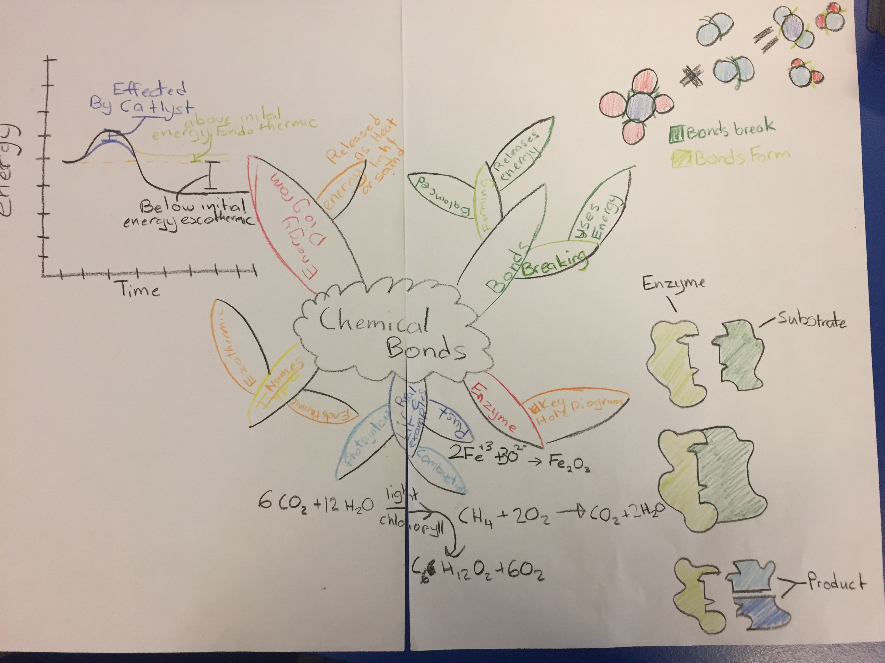

The flowing image is a picture of the draft i made for my SAT test. I decided to go for a different option because I had only really done the test. The option I went for was a mind map, although it was a mistake I'm glad I made it. By trying something different I have a better idea of what sort of learner I am. I learn't I was better at taking notes and learning the information of heart or using my notes in open book test. By making this mistake in year 10 I can now improve my ability to make mind maps.
